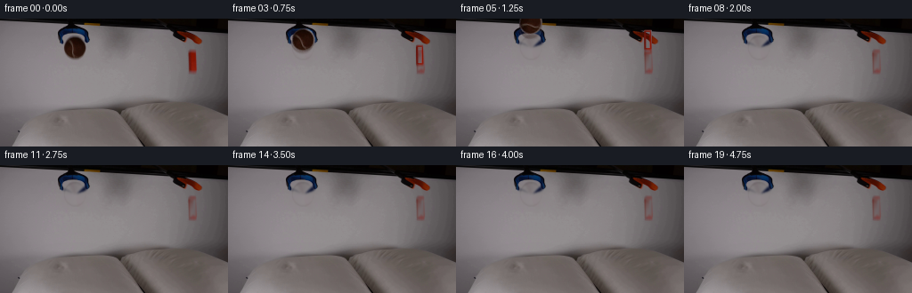
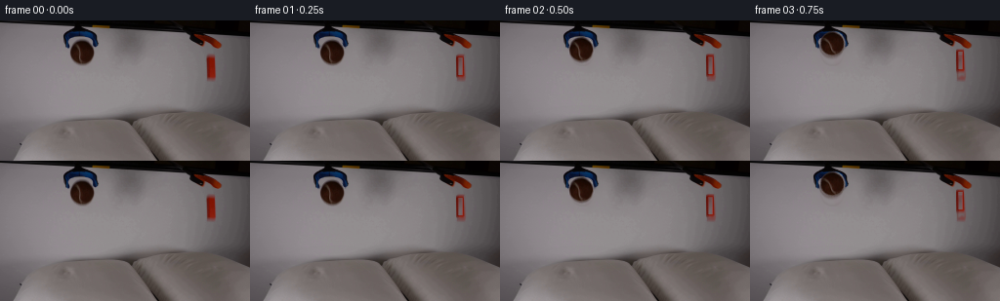
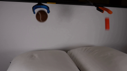
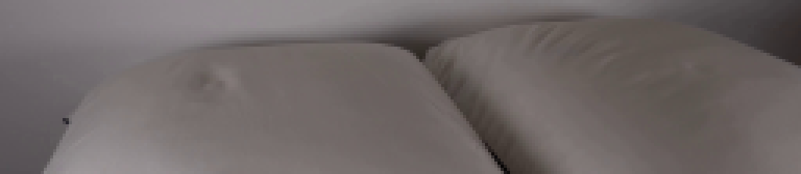

CODING AGENTS AS PIXEL WORLD MODELS
traex/Seed-2.1-Pro-0915 · 0001
点击播放 · 原生 RGB 像素
逐轮保存的候选
回放视频、检查图与代码变化。
每份候选均可单独播放。实际图片检查记录在下方工具轨迹中。
候选 01播放与检查图
点击播放 · 原生 RGB 像素


展开代码变化
--- 上一保存版本
+++ 本次保存版本
@@ -0,0 +1,210 @@
+"""Generate the 20-frame RGB video described in prompt.txt.
+
+Locked-off camera. The two grabber tools release a brown tennis ball and an
+orange block, which fall under gravity, land on the two pillows with soft
+dents/shadows and settle. Frame 00 is the untouched first_frame.png.
+"""
+from pathlib import Path
+
+import numpy as np
+from PIL import Image
+from scipy.ndimage import distance_transform_edt, gaussian_filter
+
+import artifact_io
+
+CASE_DIR = Path(__file__).resolve().parent
+N_FRAMES, FPS, H, W = 20, 4, 144, 256
+DT_FRAME = 1.0 / FPS
+
+# --- Measured from first_frame.png -----------------------------------------
+BALL_C0 = np.array([84.0, 32.5]) # initial center (x, y)
+BALL_R = 12.8
+BALL_SURFACE_Y = 100.0 # pillow crest under the ball
+BALL_REST_CY = BALL_SURFACE_Y - BALL_R + 1.8
+
+BLOCK_C0 = np.array([216.0, 47.5]) # initial center
+BLOCK_W, BLOCK_H = 9.0, 23.0
+BLOCK_SURFACE_Y = 94.5
+BLOCK_REST_CY = BLOCK_SURFACE_Y - BLOCK_H / 2.0 + 1.6
+BLOCK_REST_ANGLE = np.deg2rad(9.0)
+
+GRAVITY = 42.0
+
+
+def smoothstep(edge0, edge1, x):
+ t = np.clip((x - edge0) / (edge1 - edge0), 0.0, 1.0)
+ return t * t * (3.0 - 2.0 * t)
+
+
+def build_masks():
+ """Boolean masks of the two moving objects in frame 0."""
+ yy, xx = np.mgrid[0:H, 0:W]
+ d_ball = np.hypot(xx - BALL_C0[0], yy - BALL_C0[1])
+ ball = d_ball <= BALL_R + 1.5
+ rx = np.abs(xx - BLOCK_C0[0]) - (BLOCK_W / 2 - 1.2)
+ ry = np.abs(yy - BLOCK_C0[1]) - (BLOCK_H / 2 - 1.2)
+ sdf = np.maximum(rx, 0) ** 2 + np.maximum(ry, 0) ** 2
+ sdf = np.sqrt(sdf) + np.minimum(np.maximum(rx, ry), 0)
+ block = sdf <= 1.6
+ return ball, block
+
+
+def build_background(frame0, obj_mask):
+ """Inpaint frame-0 object regions using nearest neighbours, then smooth."""
+ mask = obj_mask.copy()
+ _, inds = distance_transform_edt(mask, return_indices=True)
+ filled = frame0[inds[0], inds[1]].astype(np.float32)
+ smoothed = gaussian_filter(filled, sigma=(1.1, 1.1, 0))
+ blur_mask = gaussian_filter(mask.astype(np.float32), 1.4)[..., None]
+ bg = frame0.astype(np.float32) * (1 - blur_mask) + smoothed * blur_mask
+ return np.clip(bg, 0, 255)
+
+
+def extract_sprite(frame0, bg, alpha, x0, y0, x1, y1):
+ """Cut an RGBA sprite, un-blending semi-transparent edge pixels."""
+ a = alpha[y0:y1, x0:x1].astype(np.float32)
+ obs = frame0[y0:y1, x0:x1].astype(np.float32)
+ wall = bg[y0:y1, x0:x1].astype(np.float32)
+ safe_a = np.maximum(a, 1e-3)[..., None]
+ unblend = (obs - (1.0 - a[..., None]) * wall) / safe_a
+ rgb = np.where(a[..., None] > 0.985, obs, unblend)
+ rgb = np.clip(rgb, 0, 255)
+ return np.dstack([rgb, a * 255.0]).astype(np.uint8)
+
+
+def make_sprites(frame0, bg):
+ yy, xx = np.mgrid[0:H, 0:W]
+ d_ball = np.hypot(xx - BALL_C0[0], yy - BALL_C0[1])
+ ball_alpha = 1.0 - smoothstep(BALL_R - 0.9, BALL_R + 1.1, d_ball)
+
+ rx = np.abs(xx - BLOCK_C0[0]) - (BLOCK_W / 2 - 1.2)
+ ry = np.abs(yy - BLOCK_C0[1]) - (BLOCK_H / 2 - 1.2)
+ sdf = np.sqrt(np.maximum(rx, 0) ** 2 + np.maximum(ry, 0) ** 2
+ + np.minimum(np.maximum(rx, ry), 0) ** 2)
+ block_alpha = 1.0 - smoothstep(0.4, 1.7, sdf)
+
+ ball_sprite = extract_sprite(frame0, bg, ball_alpha, 69, 18, 100, 47)
+ block_sprite = extract_sprite(frame0, bg, block_alpha, 209, 34, 224, 62)
+ return ball_sprite, block_sprite
+
+
+def simulate():
+ """Integrate motion at fine substeps; sample at video frame times."""
+ sub = 60
+ dt = DT_FRAME / sub
+
+ bx, bvy = BALL_C0[1], 0.0
+ ball_release, ball_contact = 0.10, None
+ ball_spin = 0.0
+
+ kx, kvy = BLOCK_C0[1], 0.0
+ block_release, block_contact, angle, omega = 0.20, None, 0.0, 0.0
+
+ samples = []
+ t = 0.0
+ for next_frame in range(N_FRAMES):
+ target_t = next_frame * DT_FRAME
+ while t + 1e-9 < target_t:
+ # Ball
+ if t >= ball_release:
+ if ball_contact is None:
+ bvy -= GRAVITY * dt
+ bx += bvy * dt
+ ball_spin -= (bvy / BALL_R) * 0.55 * dt
+ if bx >= BALL_SURFACE_Y - BALL_R:
+ ball_contact = t
+ else:
+ bx += bvy * dt
+ bvy += (-55.0 * (bx - BALL_REST_CY) - 9.0 * bvy) * dt
+ ball_spin *= max(0.0, 1.0 - 6.0 * dt)
+ # Block
+ if t >= block_release:
+ extent = (BLOCK_H / 2) * abs(np.cos(angle)) + (BLOCK_W / 2) * abs(np.sin(angle))
+ if block_contact is None:
+ kvy -= GRAVITY * dt
+ kx += kvy * dt
+ if kx + extent >= BLOCK_SURFACE_Y:
+ block_contact = t
+ omega = 5.5
+ else:
+ kx += kvy * dt
+ kvy += (-70.0 * (kx - BLOCK_REST_CY) - 12.0 * kvy) * dt
+ omega += (-42.0 * (angle - BLOCK_REST_ANGLE) - 8.5 * omega) * dt
+ angle += omega * dt
+ t += dt
+ samples.append(dict(
+ ball_y=bx, block_y=kx, angle=angle, spin=ball_spin,
+ ball_gap=max(0.0, BALL_SURFACE_Y - BALL_R - bx),
+ block_gap=max(0.0, BLOCK_SURFACE_Y - BLOCK_H / 2 - kx),
+ ))
+ return samples
+
+
+def paste_sprite(canvas, sprite, center, angle_deg=0.0):
+ img = Image.fromarray(sprite, "RGBA")
+ if angle_deg:
+ img = img.rotate(angle_deg, resample=Image.Resampling.BICUBIC, expand=True)
+ px = int(round(center[0] - img.width / 2.0))
+ py = int(round(center[1] - img.height / 2.0))
+ canvas.paste(img, (px, py), img)
+
+
+def soft_ellipse(canvas, cx, cy, sx, sy, strength):
+ """Dark Gaussian ellipse used as pillow dent / contact shadow."""
+ if strength <= 0:
+ return
+ yy, xx = np.mgrid[0:H, 0:W]
+ falloff = np.exp(-0.5 * (((xx - cx) / sx) ** 2 + ((yy - cy) / sy) ** 2))
+ a = np.clip(falloff * strength, 0, 0.45)[..., None]
+ canvas[:] = np.clip(canvas * (1 - a) + canvas * 0.45 * a, 0, 255)
+
+
+def render(bg, ball_sprite, block_sprite, samples, frame0):
+ frames = [frame0.copy()]
+ prev = None
+ for f in range(1, N_FRAMES):
+ s = samples[f]
+ arr = bg.copy()
+
+ ball_prox = float(np.clip(1.0 - s["ball_gap"] / 42.0, 0.08, 1.0))
+ block_prox = float(np.clip(1.0 - s["block_gap"] / 34.0, 0.08, 1.0))
+ soft_ellipse(arr, BALL_C0[0], BALL_SURFACE_Y + 1.5, 11.0, 3.0, 0.30 * ball_prox)
+ soft_ellipse(arr, BLOCK_C0[0], BLOCK_SURFACE_Y + 1.0, 8.0, 2.6, 0.32 * block_prox)
+ canvas = Image.fromarray(arr.astype(np.uint8), "RGB")
+
+ if prev is not None and f < N_FRAMES - 1:
+ ghost_b = Image.fromarray(ball_sprite, "RGBA")
+ ghost_b.putalpha(ghost_b.getchannel("A").point(lambda v: int(v * 0.28)))
+ paste_sprite(canvas, np.asarray(ghost_b),
+ (BALL_C0[0], 0.5 * (prev["ball_y"] + s["ball_y"])),
+ np.rad2deg(0.5 * (prev["spin"] + s["spin"])))
+ ghost_k = Image.fromarray(block_sprite, "RGBA")
+ ghost_k.putalpha(ghost_k.getchannel("A").point(lambda v: int(v * 0.28)))
+ paste_sprite(canvas, np.asarray(ghost_k),
+ (BLOCK_C0[0], 0.5 * (prev["block_y"] + s["block_y"])),
+ np.rad2deg(0.5 * (prev["angle"] + s["angle"])))
+
+ paste_sprite(canvas, block_sprite, (BLOCK_C0[0], s["block_y"]),
+ np.rad2deg(s["angle"]))
+ paste_sprite(canvas, ball_sprite, (BALL_C0[0], s["ball_y"]),
+ np.rad2deg(s["spin"]))
+ frames.append(np.asarray(canvas).astype(np.uint8))
+ prev = s
+ return np.stack(frames)
+
+
+def main():
+ frame0 = np.asarray(Image.open(CASE_DIR / "first_frame.png").convert("RGB"))
+ ball_mask, block_mask = build_masks()
+ bg = build_background(frame0, ball_mask | block_mask)
+ ball_sprite, block_sprite = make_sprites(frame0, bg)
+ samples = simulate()
+ frames = render(bg, ball_sprite, block_sprite, samples, frame0)
+ assert frames.shape == (N_FRAMES, H, W, 3)
+ assert np.array_equal(frames[0], frame0), "frame 00 must be pixel-identical"
+ artifact_io.save(frames, CASE_DIR)
+ print("saved", frames.shape)
+
+
+if __name__ == "__main__":
+ main()
可观测工具轨迹
实际执行的命令与返回图片。
命令 1exit 0
/bin/bash -lc 'cat prompt.txt; echo "---"; cat GENERATION_RULES.md; echo "---"; ls -la'
命令 2exit 0
/bin/bash -lc "cat artifact_io.py; python3 -c \"from PIL import Image; im=Image.open('first_frame.png'); print(im.size, im.mode)\""命令 3exit 1
/bin/bash -lc "cd . && python3 - <<'EOF'
import numpy as np
from PIL import Image
im = np.array(Image.open('first_frame.png').convert('RGB'))
print(im.shape)
# Find brown ball pixels: brownish R>G>B, R around 80-120
r,g,b = im[:,:,0].astype(int), im[:,:,1].astype(int), im[:,:,2].astype(int)
ball = (r>60)&(r<140)&(g>35)&(g<100)&(b<80)&(r-g>15)&(g-b>5)
ys,xs = np.where(ball)
print('ball bbox x', xs.min(), xs.max(), 'y', ys.min(), ys.max(), 'n', len(xs))
# orange block: bright orange R high, G mid, B low
block = (r>150)&(g>40)&(g<130)&(b<70)
ys2,xs2 = np.where(block)
print('block bbox x', xs2.min(), xs2.max(), 'y', ys2.min(), ys2.max(), 'n', len(xs2))
# wall color samples
for (x,y) in [(130,40),(150,80),(100,60),(220,80),(50,30)]:
print('wall',x,y,im[y,x])
EOF"命令 4exit 1
/bin/bash -lc "cd . && python3 - <<'EOF'
import numpy as np
from PIL import Image
im = np.array(Image.open('first_frame.png').convert('RGB'))
r,g,b = im[:,:,0].astype(int), im[:,:,1].astype(int), im[:,:,2].astype(int)
# ball region only x<120
ball = (r>55)&(r<140)&(g>30)&(g<105)&(b<85)&(r-g>12)&(g>=b)
ball[:, 120:] = False
ys,xs = np.where(ball)
print('ball bbox x', xs.min(), xs.max(), 'y', ys.min(), ys.max(), 'n', len(xs))
# block region x>200
blk = (r>140)&(g>30)&(g<140)&(b<90)
blk[:, :200] = False
ys2,xs2 = np.where(blk)
print('block bbox x', xs2.min(), xs2.max(), 'y', ys2.min(), ys2.max(), 'n', len(xs2))
# center of mass
print('ball centroid', xs.mean(), ys.mean())
print('block centroid', xs2.mean(), ys2.mean())
# sample colors
print('ball center px', im[34,85], im[30,80])
print('block px', im[48,216], im[40,216])
# wall stats
wall = im[60:95, 120:200].reshape(-1,3)
print('wall mean', wall.mean(0), 'min', wall.min(0), 'max', wall.max(0))
# pillow color
print('pillow px', im[120,100], im[130,200])
EOF"命令 5exit 0
/bin/bash -lc "cd . && python3 - <<'EOF'
import numpy as np
from PIL import Image
im = np.array(Image.open('first_frame.png').convert('RGB'))
for y in range(34,62,3):
row=[]
for x in range(208,226,2):
row.append(tuple(im[y,x]))
print(y, row)
EOF"命令 6exit 0
/bin/bash -lc "cd . && python3 - <<'EOF'
import numpy as np
from PIL import Image
im = np.array(Image.open('first_frame.png').convert('RGB'))
r,g,b = im[:,:,0].astype(int), im[:,:,1].astype(int), im[:,:,2].astype(int)
blk = (r>90)&(g<70)&(b<60)&(r-g>40)
blk[:, :195] = False; blk[:, 235:] = False
ys2,xs2 = np.where(blk)
print('block bbox x', xs2.min(), xs2.max(), 'y', ys2.min(), ys2.max(), 'n', len(xs2), 'centroid', xs2.mean(), ys2.mean())
ball = (r>55)&(r<140)&(g>30)&(g<105)&(b<85)&(r-g>12)&(g>=b)
ball[:, 120:] = False
ys,xs = np.where(ball)
# separate ball from blue grabber: check y range
print('ball bbox x', xs.min(), xs.max(), 'y', ys.min(), ys.max(), 'centroid', xs.mean(), ys.mean())
# Pillow surface: sample vertical profiles to estimate top surface height per column
# Pillow region: bright pixels > 140
bright = (r>130)&(g>130)&(b>125)
for x in [30,50,70,90,110,130,150,170,190,210,230,250]:
col = np.where(bright[:,x])[0]
print('x',x,'top', col.min() if len(col) else None)
# wall-pillow boundary mid gap
print('midline colors:')
for y in range(90,120,3):
print(y, im[y,137], im[y,140], im[y,143])
EOF"命令 7exit 0
/bin/bash -lc "cd . && python3 - <<'EOF'
import numpy as np
from PIL import Image
im = np.array(Image.open('first_frame.png').convert('RGB'))
r,g,b = im[:,:,0].astype(int), im[:,:,1].astype(int), im[:,:,2].astype(int)
bright = (r>125)&(g>120)&(b>115)
tops=[]
for x in range(0,256,4):
col = np.where(bright[90:,x])[0]
top = col.min()+90 if len(col) else None
tops.append((x,top))
print(tops)
# Check ball pixels color stats and seam (white curve)
ball = im[20:44, 72:100].reshape(-1,3)
print('ball color mean', ball.mean(0))
# seam pixels: lightest within ball
light = ball[ball[:,0]>120]
print('seam color', light.mean(0) if len(light) else None, len(light))
EOF"命令 8exit 0
/bin/bash -lc "cd . && python3 - <<'EOF'
import numpy as np
from PIL import Image
im = np.array(Image.open('first_frame.png').convert('RGB'))
r,g,b = im[:,:,0].astype(int), im[:,:,1].astype(int), im[:,:,2].astype(int)
bright = (r>150)&(g>145)&(b>140)
tops=[]
for x in range(0,256,4):
col = np.where(bright[95:,x])[0]
top = col.min()+95 if len(col) else None
tops.append((x,top))
print(tops)
EOF"命令 9exit 0
/bin/bash -lc "cd . && python3 - <<'EOF'
import numpy as np
from PIL import Image
im = np.array(Image.open('first_frame.png').convert('RGB'))
gray = im.mean(2)
# Print vertical profile at several columns, rows 90-144
for x in [40,70,100,130,160,190,220,245]:
prof = [int(gray[y,x]) for y in range(95,144,3)]
print('x',x, list(zip(range(95,144,3), prof)))
EOF"命令 10exit 0
/bin/bash -lc "cd . && python3 - <<'EOF'
import numpy as np
from PIL import Image
im = np.array(Image.open('first_frame.png').convert('RGB'))
r,g,b = im[:,:,0].astype(int), im[:,:,1].astype(int), im[:,:,2].astype(int)
# tight ball mask in ROI
roi = (slice(15,50), slice(68,115))
R,G,B = r[roi],g[roi],b[roi]
ball = (R>45)&(R<130)&(G>25)&(G<100)&(B<85)&(R-G>10)&(G>=B-5)
ys,xs = np.where(ball)
print('tight ball x', xs.min()+68, xs.max()+68, 'y', ys.min()+15, ys.max()+15, 'n', len(xs))
# block ROI exclude handle (y>34)
roi2 = (slice(34,62), slice(205,230))
R,G,B = r[roi2],g[roi2],b[roi2]
blk = (R>90)&(G<75)&(B<65)&(R-G>35)
ys,xs = np.where(blk)
print('tight block x', xs.min()+205, xs.max()+205, 'y', ys.min()+34, ys.max()+34, 'n', len(xs))
# blue claw color
print('blue px', im[15,80], im[12,75])
# check scipy availability
import scipy; print('scipy', scipy.__version__)
EOF"命令 11exit 0
/bin/bash -lc "cd . && python3 - <<'EOF'
import numpy as np
from PIL import Image
im = np.array(Image.open('first_frame.png').convert('RGB')).astype(float)
gray = im.mean(2)
H,W = gray.shape
surf = np.full(W, np.nan)
for x in range(W):
for y in range(92, H-5):
if gray[y:y+5, x].mean() > 99 and gray[y, x] > 85:
surf[x] = y
break
for x in range(0,256,8):
print(x, surf[x])
# print full for key zones
print('left zone', np.round(surf[10:160:10],1))
print('right zone', np.round(surf[150:256:10],1))
EOF"命令 12exit 0
/bin/bash -lc "cd . && python3 - <<'EOF'
import numpy as np
from PIL import Image
im = np.array(Image.open('first_frame.png').convert('RGB')).astype(float)
gray = im.mean(2)
# vertical gradient: pillow edge is a dark->light or light->dark soft edge.
gy = np.abs(np.diff(gray, axis=0))
# For each column, find strongest gradient in y 92..140
for x in range(8,256,8):
col = gy[92:140, x]
y = col.argmax()+92
print(x, y, round(col.max(),1))
EOF"命令 13exit 0
/bin/bash -lc "cd . && python3 - <<'EOF'
from PIL import Image
im = Image.open('first_frame.png').convert('RGB')
# bottom half enlarged
crop = im.crop((0,88,256,144)).resize((256*4,56*4), Image.Resampling.NEAREST)
crop.save('.tmp/bottom4x.png')
# ball area
im.crop((60,0,120,52)).resize((240,208), Image.Resampling.NEAREST).save('.tmp/ball4x.png')
# block area
im.crop((200,30,232,64)).resize((128,136), Image.Resampling.NEAREST).save('.tmp/block4x.png')
print('ok')
EOF"命令 14exit 0
/bin/bash -lc "cd . && python3 - <<'EOF'
from PIL import Image
import numpy as np
im = np.array(Image.open('first_frame.png').convert('RGB')).astype(float)
for x in [82,86,90, 210,216,222]:
print('x',x)
for y in range(92,115):
print(' ', y, im[y,x].astype(int))
EOF"命令 15exit 0
/bin/bash -lc "cd . && python3 - <<'EOF'
from PIL import Image
import numpy as np
im = np.array(Image.open('first_frame.png').convert('RGB')).astype(float)
for x in [84, 216]:
print('x',x)
for y in range(78,106):
print(' ', y, im[y,x].astype(int))
EOF"命令 16exit 0
/bin/bash -lc "cd . && python3 generate.py && ls frames | head && python3 - <<'EOF'
import numpy as np
from PIL import Image
f0 = np.array(Image.open('first_frame.png').convert('RGB'))
g0 = np.array(Image.open('frames/00.png').convert('RGB'))
print('frame0 identical:', np.array_equal(f0, g0))
# quick motion summary
for i in range(0,20,2):
a = np.array(Image.open(f'frames/{i:02d}.png').convert('RGB')).astype(int)
print(i, 'mean abs diff vs f0:', np.abs(a-f0).mean().round(2))
EOF"视觉工具实际返回图片 1

视觉工具实际返回图片 2

保存候选 1 份；完成命令 16 次；可验证图片返回 2 张。原始 API 响应与完整日志保留在本地。